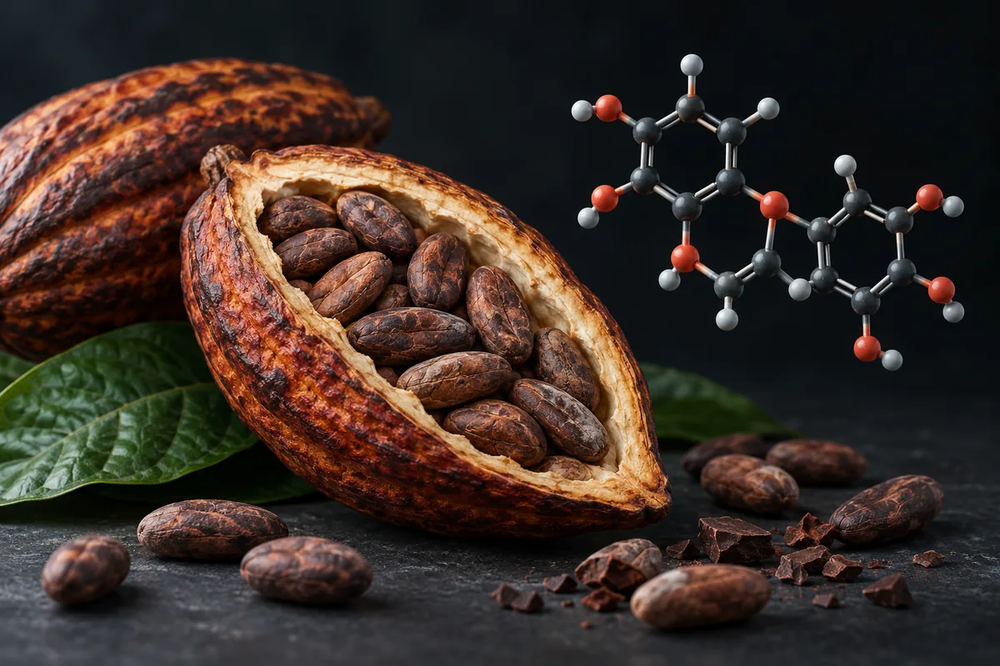

Epicatequina ((−)-epicatequina; extrato de cacau)
O estudo de 2013 que "derrubou a miostatina" tratou 6 pessoas por 7 dias, sem placebo; num ensaio de 4 semanas, a epicatequina não mexeu na miostatina do músculo.

Material experimental. Leia antes de usar qualquer coisa daqui.
Nada nesta página é recomendação médica, prescrição ou plano de tratamento. É uma tradução organizada de protocolos que circulam em comunidades de pesquisa e, quando existe, do que ensaios publicados testaram. As duas coisas estão marcadas de forma diferente — e não são equivalentes.
A maior parte dos compostos aqui não tem aprovação da ANVISA nem da FDA para uso humano. Vários são vendidos com rótulo de "uso exclusivo em pesquisa", o que significa que não passaram por controle de pureza, esterilidade ou dosagem para consumo por pessoas. Dose descrita por comunidade não é dose validada: é o que alguém relatou ter feito.
Converse com um profissional de saúde habilitado antes de considerar qualquer um destes compostos. Se você já usa algum e sentir algo fora do previsto, procure atendimento — não espere o próximo exame de rotina.
Resumo
A (−)-epicatequina é o flavanol mais citado do cacau. A fama de "desligar a miostatina" vem de um piloto de 2013 em 6 pessoas, 50 mg por dia por 7 dias, sem placebo, com preensão 7% maior e a razão folistatina/miostatina subindo em dado não mostrado. Num ensaio de 4 semanas em 20 ciclistas, ela não mudou a miostatina do músculo e atrapalhou a adaptação aeróbia. Em idosos com sarcopenia, somada à musculação, a força subiu mais. Os efeitos mais sólidos do cacau são vasculares e pequenos. No Brasil, o extrato de cacau é permitido em suplemento até 300 mg por dia.
Por que esta página existe
A epicatequina aparece descrita em vídeos curtos sobre saúde masculina que vi publicados na internet, como o extrato de cacau que "desliga a trava" do músculo: a miostatina, proteína que limita o crescimento. Um vídeo cita o Journal of Nutritional Biochemistry de 2013: em sete dias, a folistatina sobe, a miostatina cai e a força de preensão aumenta, "em humano, não em rato", segundo a Universidade da Califórnia em San Diego. Diz que a molécula "não é patenteável" e por isso ninguém a vende, e que uma "combinação" não nomeada "triplica" a folistatina. Outro vídeo promete mais músculo em 14 dias, cita um "estudo do repositório da USP", fala em óxido nítrico e "pump" nas duas primeiras horas, mitocôndrias novas, recuperação rápida e mais força, e diz que "a ANVISA não quer que você descubra".
Levantei as alegações de 2 vídeos curtos, separei as 12 verificáveis e fui atrás de cada estudo citado. Li o texto integral do estudo de 2013 e do estudo de segurança de 2015, que estão em acesso aberto, e os resumos dos demais. Nenhum número desta página veio da fonte secundária do site. A folistatina vendida em frasco e os remédios que bloqueiam a miostatina estão em outra página do site (proprio_gh_miostatina).
Este site trata de assunto vizinho também em GH e miostatina — o que ainda faltava.
A miostatina é real; o "interruptor" de cacau é que não foi demonstrado
A biologia de base está certa. McPherron e colegas (1997) descobriram que camundongos sem o gene da miostatina (GDF-8) ficam muito maiores, com músculos duas a três vezes mais pesados: ela é um freio do crescimento muscular. A folistatina é uma proteína que se liga à miostatina e a neutraliza.
O salto é do freio para o cacau. A ideia de que a epicatequina reduz a miostatina vem de células e de animais, como resume a revisão sistemática de German e colegas (2024), com coautores da USP de Bauru: há um efeito "comum" de inibição da miostatina e de estímulo à folistatina nos estudos, sobretudo em animais e células, mas "não há padronização de protocolo nem evidência clínica suficiente" para conclusões terapêuticas. Em pessoas, os dados são poucos e pequenos, e o único ensaio que mediu a miostatina dentro do músculo não achou mudança.
O estudo de 2013, lido inteiro
O artigo de Gutierrez-Salmean e colegas saiu na versão impressa do Journal of Nutritional Biochemistry de janeiro de 2014, com publicação online em outubro de 2013. Tem autores da Universidade da Califórnia em San Diego e do Instituto Politécnico Nacional do México. É, de fato, o estudo que os vídeos descrevem, e é muito menor do que parece.
- Em pessoas, foram 6. Um "estudo piloto inicial" em 6 adultos de 41 anos em média, com 25 mg de epicatequina pura duas vezes ao dia (cerca de 1 mg por quilo por dia) por 7 dias. Não houve grupo placebo: a comparação é de cada pessoa antes e depois.
- O que mudou. A força de preensão subiu cerca de 7%. A razão entre folistatina e miostatina no plasma subiu 49,2 ± 16,6%, mas o artigo marca o dado como "não mostrado". O resumo não diz que a miostatina caiu nas pessoas; fala da razão.
- O resto é camundongo e tecido de banco. A queda da miostatina e a alta de marcadores de crescimento foram vistas em camundongos tratados por 2 semanas. A comparação de músculo jovem e idoso usou biópsias de um banco de tecidos, de 6 jovens e 6 idosos que não tomaram nada.
- Os próprios autores chamam o resultado de "provocativo" e pedem "exame rigoroso". A declaração de conflito de interesse diz "nada a declarar".
Quanta evidência existe, de verdade
Os números abaixo foram levantados por mim em 16 de outubro de 2026, no PubMed e no ClinicalTrials.gov. A consulta de cada linha está ao lado do número, para qualquer pessoa repetir e me contradizer. No PubMed, a palavra epicatechin sem marcador é traduzida para o descritor geral de catequinas, que inclui as do chá verde, e devolve 22.902 artigos; por isso as linhas abaixo usam a marcação de título e resumo ([tiab]).
| Base | Consulta | Resultado |
|---|---|---|
| PubMed | epicatechin[tiab] | 6.706 artigos |
| PubMed | (epicatechin[tiab]) AND (humans[MeSH Terms]) | 1.882 artigos |
| PubMed | (epicatechin[tiab]) AND (Randomized Controlled Trial[Publication Type] OR Meta-Analysis[Publication Type]) | 124 artigos |
| PubMed | (epicatechin[tiab]) AND (myostatin[tiab] OR follistatin[tiab]) | 13 artigos |
| PubMed | (epicatechin[tiab]) AND (myostatin[tiab] OR follistatin[tiab]) AND (Clinical Trial[Publication Type] OR Randomized Controlled Trial[Publication Type]) | 3 artigos |
| PubMed | (epicatechin[tiab] OR "cocoa flavanol"[tiab] OR "cocoa flavanols"[tiab]) AND ("muscle strength"[tiab] OR sarcopenia[tiab] OR "muscle mass"[tiab] OR "resistance training"[tiab]) AND (Randomized Controlled Trial[Publication Type] OR Meta-Analysis[Publication Type]) | 2 artigos |
| PubMed | (epicatechin OR "cocoa flavanol" OR "cocoa flavanols") AND (flow-mediated dilation OR endothelial function) AND (Meta-Analysis[Publication Type]) | 5 artigos |
| ClinicalTrials.gov | intervenção: epicatechin | 147 estudos registrados |
| ClinicalTrials.gov | intervenção: (epicatechin) AND AREA[Phase]PHASE3 | 4 ensaios de fase 3 |
| ClinicalTrials.gov | intervenção: epicatechin AND AREA[Condition](sarcopenia OR muscle atrophy OR muscular dystrophy OR Becker) | 5 estudos registrados |
| ClinicalTrials.gov | intervenção: "cocoa flavanol" OR "cocoa flavanols" OR "cocoa extract" | 210 estudos registrados |
Leitura honesta desses números
- Miostatina com epicatequina em ensaio clínico: 3 artigos. Um é o estudo de segurança de 2015, com 4 a 9 pessoas por grupo; outro é o ensaio de sarcopenia de 2019; o terceiro é de uma forma diferente da molécula, a (+)-epicatequina, numa doença rara (ataxia de Friedreich). O estudo de 2013 que circula nem tem a marcação de ensaio clínico.
- Força ou massa muscular com epicatequina ou flavanol de cacau: 2 artigos marcados como ensaio randomizado ou meta-análise, e só um deles é um ensaio da epicatequina.
- O que tem volume é o vaso. As 5 meta-análises de função do endotélio mostram onde está a evidência mais sólida do cacau: na dilatação das artérias, não no músculo.
- Registro não é resultado. Os 5 registros de músculo são de distrofias de Becker e Duchenne, com 2 a 22 participantes, e um de chá verde. Os 4 de fase 3 são de radiodermite, de doença arterial periférica com flavanóis de cacau e de outra catequina, a do chá verde.
- Contagem de artigo mede atenção acadêmica, não evidência de desfecho.
Os estudos que sustentam as alegações
Segundo o PubMed, estes são os trabalhos concretos por trás do que se diz sobre a epicatequina e o músculo. Leia o que cada um mediu, e em quantas pessoas.
| Estudo | N | Contexto | O que relatou | Ressalva |
|---|---|---|---|---|
| Gutierrez-Salmean et al., 2014 (online 2013) J Nutr Biochem 25(1):91-4 · PMID 24314870 | 6 | Adultos de 41 anos em média; 25 mg de epicatequina pura 2×/dia, 7 dias; e camundongos | Preensão +~7%; razão folistatina/miostatina +49,2 ± 16,6% ("dado não mostrado") | Sem placebo; o dado principal não está publicado no artigo |
| Barnett et al., 2015 Food Funct 6(3):824-33 · PMID 25598082 | 17 (9 em dose única, 8 em 5 dias) | Fase 1, aberta; 50 a 200 mg em dose única ou 50 mg 1× ou 2×/dia por 5 dias | Folistatina no plasma ~2,5 vezes maior no 5º dia com 2×/dia; nitrito +30% e +17%; sem efeito adverso | 4 pessoas por esquema; apoiado pela empresa que purificou a molécula |
| Mafi et al., 2019 J Aging Phys Act 27(3):384-391 · PMID 30299198 | 62 homens | Sarcopenia, 68,63 anos; 8 semanas; treino, epicatequina, treino + epicatequina ou placebo; duplo-cego | Maior ganho de folistatina e de força no leg press e no supino com treino + epicatequina; miostatina caiu só nos grupos com treino | Dose não está no resumo; idosos com sarcopenia |
| Schwarz et al., 2018 Front Nutr 5:132 · PMID 30622947 | 20 | 4 semanas de bicicleta; 100 mg 2×/dia ou placebo | VO2 pico relativo subiu no placebo e não com epicatequina; enzima mitocondrial SDH subiu só no placebo; miostatina do músculo sem mudança | O único ensaio que mediu miostatina no músculo de gente saudável |
| McDonald et al., 2021 Muscle Nerve 63(2):239-249 · PMID 33125736 | 7 | Distrofia de Becker; 50 mg 2×/dia, 8 semanas; aberto | Folistatina subiu e miostatina caiu no músculo; marcadores mitocondriais em alta | Sem controle; coautores da empresa que desenvolve a epicatequina |
| Taub et al., 2012 Clin Transl Sci 5(1):43-7 · PMID 22376256 | 5 | Diabetes tipo 2 e insuficiência cardíaca; chocolate amargo e bebida com ~100 mg/dia de epicatequina, 3 meses | Mais marcadores de biogênese mitocondrial e de cristas; volume mitocondrial igual | Cinco pacientes, sem controle |
| Corr et al., 2020 Int J Sport Nutr Exerc Metab 30(5):338-344 · PMID 32663386 | 23 | Dose aguda de 830 ou 1.245 mg de flavanóis de cacau após exercício que causa dano | Nenhuma diferença na recuperação de força ou na dor | Dose única |
| German et al., 2024 (revisão sistemática) Nutrients 16(2):326 · PMID 38276564 | humanos, animais e células | Epicatequina em atrofia muscular | Efeito "comum" sobre miostatina e folistatina nos estudos; sem padronização nem evidência clínica suficiente | Coautores da USP de Bauru |
| Schroeter et al., 2006 Proc Natl Acad Sci U S A 103(4):1024-9 · PMID 16418281 | homens saudáveis | Cacau rico em flavanol e epicatequina pura | Elevação aguda de óxido nítrico circulante e da dilatação das artérias; a epicatequina reproduziu o efeito do cacau | O tempo exato não está no resumo |
| Sun et al., 2019 (meta-análise) Food Funct 10(10):6322-6330 · PMID 31524216 | 15 artigos, 18 braços | Flavanóis de cacau e dilatação mediada por fluxo | +1,17% na dilatação (IC 95% 0,76–1,57); efeito ótimo com cerca de 95 mg de epicatequina | Risco de viés na maioria dos estudos |
| Sesso et al., 2022 (COSMOS) Am J Clin Nutr 115(6):1490-1500 · PMID 35294962 | 21.442 | Idosos; extrato de cacau com 500 mg/dia de flavanóis, incluindo 80 mg de epicatequina; 3,6 anos | Eventos cardiovasculares totais: HR 0,90 (IC 0,78–1,02; P = 0,11); morte cardiovascular: HR 0,73 | Desfecho principal não significativo; "sem preocupações de segurança" |
Doses usadas em estudos humanos publicados
Isto não é recomendação de dose: é o registro do que foi administrado em estudos publicados, com a finalidade de cada um. Fora do contexto do estudo, esses números não se transferem.
| Estudo | Dose | Duração | Finalidade do estudo |
|---|---|---|---|
| Gutierrez-Salmean et al., 2014 | 25 mg de (−)-epicatequina pura 2×/dia (~1 mg/kg/dia) | 7 dias | Preensão e folistatina/miostatina, sem placebo |
| Barnett et al., 2015 | 50, 100 ou 200 mg em dose única; 50 mg 1× ou 2×/dia | Dose única e 5 dias | Segurança e farmacocinética |
| Schwarz et al., 2018 | 100 mg 2×/dia (200 mg/dia) | 4 semanas | Adaptação ao treino de bicicleta |
| McDonald et al., 2021 | 50 mg 2×/dia | 8 semanas | Músculo na distrofia de Becker |
| Taub et al., 2012 | ~100 mg/dia de epicatequina em chocolate amargo e bebida | 3 meses | Mitocôndrias em diabetes e insuficiência cardíaca |
| Sesso et al., 2022 | Extrato de cacau com 500 mg/dia de flavanóis (80 mg de epicatequina) | Mediana de 3,6 anos | Eventos cardiovasculares |
| Corr et al., 2020 | 830 ou 1.245 mg de flavanóis de cacau | Dose única | Recuperação após dano muscular |
Nenhum vídeo informou dose, e nenhum estudo testou a "combinação" que eles dizem triplicar a folistatina. Atenção à diferença entre epicatequina e extrato de cacau: o limite brasileiro de 300 mg por dia é de extrato, não de epicatequina pura.
Das 12 alegações conferidas, 1 se confirma como foi dita: a de que a miostatina freia o músculo
Cada linha é uma alegação como ela circula, sem o nome de quem a fez. O veredito usa seis rótulos: confirmado, parcialmente, não sustentado, sem estudo em humanos, estudo em animal ou in vitro e número não encontrado na fonte citada.
| O que se diz | O que os estudos mostram | Veredito |
|---|---|---|
| A miostatina é uma proteína que existe para impedir o músculo de crescer demais | Camundongos sem o gene da miostatina têm músculos duas a três vezes mais pesados (McPherron 1997) | Confirmado |
| Journal of Nutritional Biochemistry, 2013: em 7 dias, a folistatina sobe, a miostatina cai e a preensão aumenta | O artigo existe (online em 2013): 6 pessoas, 7 dias, sem placebo; preensão +~7%; a razão folistatina/miostatina subiu, em dado não mostrado; a queda da miostatina foi vista em camundongos | Parcialmente |
| A Universidade da Califórnia em San Diego documentou isso "em humano, não em rato" | Há autores da UCSD; a parte humana é um piloto de 6 pessoas, e o resto do artigo é camundongo e tecido de banco | Parcialmente |
| A molécula não é patenteável, e por isso a indústria não financia | Uma empresa americana purificou e forneceu a epicatequina para o estudo de 2015 e apoiou o estudo; a mesma empresa, com outro nome, patrocina um ensaio registrado de (+)-epicatequina em distrofia | Não sustentado |
| Uma "combinação" não nomeada triplica a folistatina | Sem nome, não há como procurar; o maior número que achei é ~2,5 vezes, com epicatequina pura, em 4 pessoas (Barnett 2015) | Não sustentado |
| "A ANVISA não quer que você descubra" | A ANVISA autoriza o extrato de cacau em suplemento desde 2021 (IN 102), até 300 mg por dia | Não sustentado |
| Aumenta o músculo em 14 dias | Nenhum estudo humano mediu massa muscular em 14 dias; o de 7 dias mediu preensão; o de 8 semanas, em idosos, combinou epicatequina com treino | Não sustentado |
| Um estudo "do repositório da USP" e "pesquisas de atrofia" mostram bloqueio da miostatina e alta da folistatina em duas semanas | Não localizei esse estudo no repositório da USP; a revisão de 2024 com coautores da USP descreve o efeito sobretudo em animais e células e diz que falta evidência clínica; num ensaio de 4 semanas, a miostatina do músculo não mudou (Schwarz 2018) | Parcialmente |
| Dispara óxido nítrico nas primeiras duas horas, dilata os vasos e dá "pump" | Elevação aguda de óxido nítrico e da dilatação das artérias com cacau e com epicatequina pura (Schroeter 2006); efeito médio de +1,17% na dilatação (Sun 2019); "pump" no treino não foi medido | Parcialmente |
| Acelera a recuperação e repara o tecido depois do esforço | Doses altas de flavanóis de cacau não mudaram a recuperação após dano muscular (Corr 2020) | Não sustentado |
| Melhora a força nos exercícios | Em idosos com sarcopenia, a força subiu mais com treino + epicatequina (Mafi 2019); em 6 pessoas, preensão +~7% sem placebo; nenhum estudo em jovens treinados | Parcialmente |
| Estimula mitocôndrias novas e dá "mais energia" | Marcadores de biogênese em 5 pacientes com insuficiência cardíaca e em 7 com distrofia, sem controle; em 20 jovens treinando bicicleta, a epicatequina bloqueou o ganho de VO2 e da enzima mitocondrial SDH (Schwarz 2018) | Parcialmente |
Placar: 1 confirmada, 6 parcialmente e 5 não sustentadas.
O único ensaio controlado em gente saudável apontou para o lado errado
Schwarz e colegas (2018) fizeram o teste que os vídeos não citam: 20 pessoas treinaram bicicleta por 4 semanas, metade com 100 mg de epicatequina duas vezes ao dia e metade com placebo. Três achados contrariam o que se promete:
- A miostatina no músculo não mudou em nenhum grupo.
- O VO2 pico relativo subiu com placebo e não subiu com epicatequina. A diferença entre os grupos foi significativa (p = 0,04).
- A enzima mitocondrial SDH subiu só no grupo placebo. Os autores concluem que a epicatequina "inibe as adaptações aeróbias e mitocondriais" ao treino.
É um estudo pequeno, como todos os outros desta página. Mas é o único com placebo em pessoas saudáveis que treinam, que é o público dos vídeos, e o resultado foi o oposto do anúncio.
Segurança, efeitos adversos e quem não deve usar sem médico
- Em doses de estudo, a epicatequina foi bem tolerada. O estudo de segurança de 2015 não registrou efeito adverso com até 200 mg em dose única ou 100 mg por dia por 5 dias (Barnett 2015). No COSMOS, mais de 21 mil idosos tomaram extrato de cacau com 80 mg diários de epicatequina por 3,6 anos em mediana, "sem preocupações de segurança" (Sesso 2022).
- O risco mais concreto para quem treina é perder adaptação. Com 200 mg por dia, o ganho de VO2 do treino aeróbio não apareceu (Schwarz 2018).
- Antidoping. A Lista Proibida de 2026 inclui, na classe S4.3, "inibidores de miostatina, como agentes que reduzem ou eliminam a expressão da miostatina". A epicatequina não é citada. Se a promessa dos vídeos fosse verdadeira, ela descreveria exatamente essa classe; que isso crie risco para o atleta é inferência minha, e NÃO VERIFIQUEI se a agência se pronunciou sobre a epicatequina.
- Gestantes, lactantes e menores de 19 anos: pela regra brasileira de suplementos, o extrato de cacau não é autorizado para esses grupos.
- Interações formais: NÃO VERIFIQUEI bases de interação medicamentosa.
Status regulatório
- Brasil, suplemento alimentar: o extrato de cacau (Theobroma cacao L.) consta do Anexo I da IN 28/2018 como fonte de compostos fenólicos, incluído pela IN 102, de 15 de outubro de 2021. O Anexo IV fixa o máximo de 300 mg por dia para maiores de 19 anos e não autoriza o uso nos demais grupos, inclusive gestantes e lactantes. O Anexo V não traz nenhuma alegação para o cacau, e pela RDC 243/2018 (art. 16) só as alegações dessa lista podem ir ao rótulo: "reduz a miostatina" ou "aumenta o músculo" não pode. A epicatequina isolada não consta da lista. Versão consolidada conferida: com alterações até a IN 470, de 16 de setembro de 2026.
- Brasil, medicamento: nenhum registro com epicatequina ou Theobroma como princípio ativo no dado aberto da ANVISA (tabela abaixo).
- União Europeia: existe uma alegação de saúde autorizada para flavanóis de cacau, sobre a elasticidade dos vasos e o fluxo sanguíneo normal; segundo o parecer da EFSA de 2014, que tratou da ampliação dessa autorização para extrato em cápsula, o efeito exige 200 mg de flavanóis de cacau por dia. Não é alegação de músculo.
- Estados Unidos: NÃO VERIFIQUEI.
- WADA: a epicatequina não aparece nominalmente na Lista Proibida de 2026; ver o item de antidoping acima.
No Brasil, busquei no dado aberto de medicamentos registrados da ANVISA, no princípio ativo e no nome do produto, sem acento e sem diferença de caixa.
| Princípio ativo | Padrão buscado | Registros ativos | Classe terapêutica declarada | Produtos |
|---|---|---|---|---|
| epicatequina, Theobroma cacao | epicatequ|theobroma | 0 | — | nenhum produto |
O que este levantamento não fez
- Li o estudo de 2013 e o de 2015 inteiros, e os resumos dos demais. A dose do ensaio de sarcopenia de 2019 não está no resumo e não conferi no texto.
- Não localizei o "estudo do repositório da USP" nem a "combinação" que triplicaria a folistatina.
- Não conferi patentes de epicatequina; a afirmação sobre interesse comercial se apoia na empresa que forneceu a molécula e patrocina ensaio registrado.
- Não conferi o texto do regulamento europeu da alegação de flavanóis de cacau, só o parecer da EFSA de 2014.
- Não conferi a situação nos Estados Unidos nem um pronunciamento da agência antidoping sobre a epicatequina.
- Não avaliei chocolate como alimento, com açúcar, gordura e cafeína; esta página trata de extrato e de epicatequina em cápsula.
- Não avaliei interações em base de interações medicamentosas.
Referências
- Gutierrez-Salmean G, Ciaraldi TP, Nogueira L, et al. Effects of (-)-epicatechin on molecular modulators of skeletal muscle growth and differentiation. J Nutr Biochem. 2014;25(1):91-4. PMID 24314870 — o estudo citado nos vídeos: 6 pessoas, 7 dias, sem placebo, razão folistatina/miostatina em dado não mostrado.
- Barnett CF, Moreno-Ulloa A, Shiva S, et al. Pharmacokinetic, partial pharmacodynamic and initial safety analysis of (-)-epicatechin in healthy volunteers. Food Funct. 2015;6(3):824-33. PMID 25598082 — segurança, folistatina ~2,5 vezes em 4 pessoas; apoio da empresa que forneceu a molécula.
- Mafi F, Biglari S, Ghardashi Afousi A, Gaeini AA. Improvement in Skeletal Muscle Strength and Plasma Levels of Follistatin and Myostatin Induced by an 8-Week Resistance Training and Epicatechin Supplementation in Sarcopenic Older Adults. J Aging Phys Act. 2019;27(3):384-391. PMID 30299198 — força maior com treino e epicatequina em idosos com sarcopenia.
- Schwarz NA, Blahnik ZJ, Prahadeeswaran S, et al. (-)-Epicatechin Supplementation Inhibits Aerobic Adaptations to Cycling Exercise in Humans. Front Nutr. 2018;5:132. PMID 30622947 — miostatina do músculo igual; adaptação aeróbia bloqueada.
- McDonald CM, Ramirez-Sanchez I, Oskarsson B, et al. (-)-Epicatechin induces mitochondrial biogenesis and markers of muscle regeneration in adults with Becker muscular dystrophy. Muscle Nerve. 2021;63(2):239-249. PMID 33125736 — 7 pacientes com distrofia, sem controle.
- Taub PR, Ramirez-Sanchez I, Ciaraldi TP, et al. Alterations in skeletal muscle indicators of mitochondrial structure and biogenesis in patients with type 2 diabetes and heart failure: effects of epicatechin rich cocoa. Clin Transl Sci. 2012;5(1):43-7. PMID 22376256 — mitocôndrias em 5 pacientes.
- Corr LD, Field A, Pufal D, et al. Acute Consumption of Varied Doses of Cocoa Flavanols Does Not Influence Exercise-Induced Muscle Damage. Int J Sport Nutr Exerc Metab. 2020;30(5):338-344. PMID 32663386 — sem efeito na recuperação.
- German IJS, Pomini KT, Andreo JC, et al. New Trends to Treat Muscular Atrophy: A Systematic Review of Epicatechin. Nutrients. 2024;16(2):326. PMID 38276564 — falta evidência clínica; coautores da USP de Bauru.
- Schroeter H, Heiss C, Balzer J, et al. (-)-Epicatechin mediates beneficial effects of flavanol-rich cocoa on vascular function in humans. Proc Natl Acad Sci U S A. 2006;103(4):1024-9. PMID 16418281 — óxido nítrico e dilatação aguda.
- Sun Y, Zimmermann D, De Castro CA, Actis-Goretta L. Dose-response relationship between cocoa flavanols and human endothelial function: a systematic review and meta-analysis of randomized trials. Food Funct. 2019;10(10):6322-6330. PMID 31524216 — +1,17% na dilatação mediada por fluxo.
- Sesso HD, Manson JE, Aragaki AK, et al. Effect of cocoa flavanol supplementation for the prevention of cardiovascular disease events: the COcoa Supplement and Multivitamin Outcomes Study (COSMOS) randomized clinical trial. Am J Clin Nutr. 2022;115(6):1490-1500. PMID 35294962 — 21.442 idosos, desfecho principal não significativo, sem preocupações de segurança.
- McPherron AC, Lawler AM, Lee SJ. Regulation of skeletal muscle mass in mice by a new TGF-beta superfamily member. Nature. 1997;387(6628):83-90. PMID 9139826 — a miostatina como freio do músculo.
- EFSA NDA Panel. Scientific Opinion on the modification of the authorisation of a health claim related to cocoa flavanols and maintenance of normal endothelium-dependent vasodilation pursuant to Article 13(5) of Regulation (EC) No 1924/2006 following a request in accordance with Article 19 of Regulation (EC) No 1924/2006. EFSA J. 2014;12(5):3654. PMID 42125362 — alegação vascular com 200 mg/dia de flavanóis de cacau.
- Registro NCT04386304 no ClinicalTrials.gov — ensaio de (+)-epicatequina em distrofia de Becker patrocinado por empresa, concluído, sem resultado no registro.
- Instrução Normativa nº 28, de 26 de julho de 2018, da ANVISA, texto consolidado no AnvisaLegis — extrato de cacau autorizado, máximo de 300 mg/dia para maiores de 19 anos, sem alegação.
- Resolução RDC nº 243, de 26 de julho de 2018, da ANVISA, texto consolidado no AnvisaLegis — constituintes e alegações restritos às listas da IN 28/2018.
- Dado aberto de medicamentos registrados da ANVISA — a mesma base usada na página O que existe no Brasil.
- Lista Proibida da WADA de 2026 (cópia mantida pela Universidade do Esporte de Colônia) — classe S4.3, inibidores de miostatina; a epicatequina não é citada.
- E-utilities do PubMed (esearch) — a base de todas as contagens de artigo desta página.
- API pública do ClinicalTrials.gov, versão 2 — a base de todas as contagens de estudo e de fase 3 desta página.